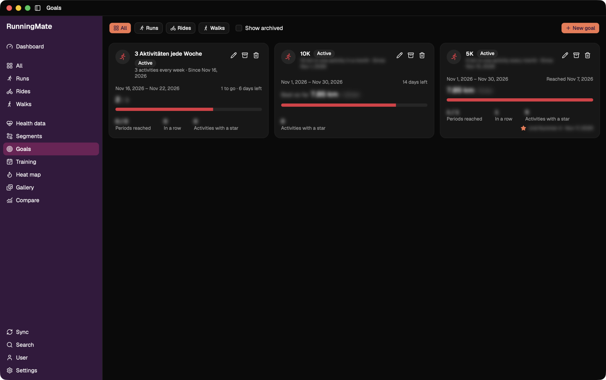

Goals
A goal is a target you set yourself: a distance, a time, a climb or a number of activities. You can reach it in one activity ("a 10 km run in under 50 minutes") or as the total over a period ("100 km a month", "3 runs a week", "500 km in 60 days"), once or again and again.
Setting a goal
Open the Goals page from the sidebar or with ⇧⌘O and click New goal.
- Sport: all activities, or only runs, rides or walks.
- Goal for: Distance (km), Time (hours, the elapsed time of the activities), Elevation (m climbed) or the number of Activities.
- Target: the amount to reach, above zero.
- Counted: All activities together adds them up over the period; In one activity needs a single activity to reach the target (the longest one, for a time). A number of activities is always a total.
- Time limit: only for a distance or climb in one activity, the most it may take, as H:MM:SS, and optional. "10 km" with 0:50:00 is reached by any activity of at least 10 km that took 50 minutes or less.
- Period: a Week (Monday to Sunday), a calendar Month or Year, a Number of days (1 to 3650, entered under Days), or No period: one stretch from the start date to the end date, or for good.
- Repeat: the goal starts over in the next period, or after each window of days. Without it, the goal has a single period and is reached or missed once. A goal with no period can't repeat.
- Start: the first day counted. Weeks, months and years follow the calendar, so the week, month or year holding the start date counts in full. A number of days runs from the start date. A start date in the past counts the activities you already did.
- End: tick No end date to let the goal run for good, or pick the last day. With no period, the end date is the last day counted. With a period, the period holding the end date is the last one, and it counts in full.
- Name: left empty, the goal is named after what it asks for, for example "100 km every month" or "10 km in under 0:50:00 in one activity".
Status
Each goal has one of these states:
- Upcoming: the start date is still ahead.
- Active: the goal is running.
- Reached: a goal without repeat was reached.
- Missed: a goal without repeat whose period is over without reaching it.
- Ended: a repeating goal past its end date.
Progress on the dashboard
The dashboard shows a row of chips, one per goal that is upcoming, active or reached; missed and ended goals are left out. A chip shows the current period's progress against the target with a bar, and below it what is left to do and the days left, "Starts …" for an upcoming goal or "Reached …" once done. A goal in one activity shows Best so far until it is reached. From two periods reached in a row on, the chip adds the streak, for example "3 in a row".
A goal for a distance in one activity (for example 10 km, or 10 km in under 50 minutes) shows instead how often it was reached, large, and below it Best time: the fastest of those activities scaled to the goal's distance. A 12 km run in 57:36 counts as 48:00 for a 10 km goal. Before the first hit it says Not reached yet.
Click a chip to open the Goals page. Without any goal, the row has a Set a goal button.
When you move the dashboard back in time (the arrows and date field below the photos, four weeks a step), the chips show the goals as they stood on that day: later activities don't count yet.
The Goals page

Each goal has a card with its state, what it asks for and its dates, the current period with its progress and days left, and the earlier periods as small bars, oldest on the left, up to twelve of them. A bar is filled in the sport's colour where the target was reached and fainter the further it was from the target; hover it for the period and its value. Below the bars:
- Periods reached, for a repeating goal: reached periods out of those that are over or reached.
- In a row, for a repeating goal: the streak of periods reached in a row up to now. A running period that isn't reached yet doesn't break it.
- Activities with a star, and the latest of them; click it to open the activity.
Filter by sport at the top. You can edit, archive or delete a goal from its card. Archived goals are hidden from the dashboard and the list unless you tick Show archived, and keep their stars. Restore brings an archived goal back. Deleting a goal removes its stars; the activities stay as they are.
Stars
An activity that hit a goal shows a star, on the dashboard feed and in the activity panel, with the number of goals when it hit several. Hover it to see which goals it hit.
- For a goal in one activity, every activity that reaches it gets a star.
- For a total, the activity that took the total past the target in its period gets the star.
Progress and stars are worked out from the activities each time, so importing, editing or deleting an activity updates them right away.